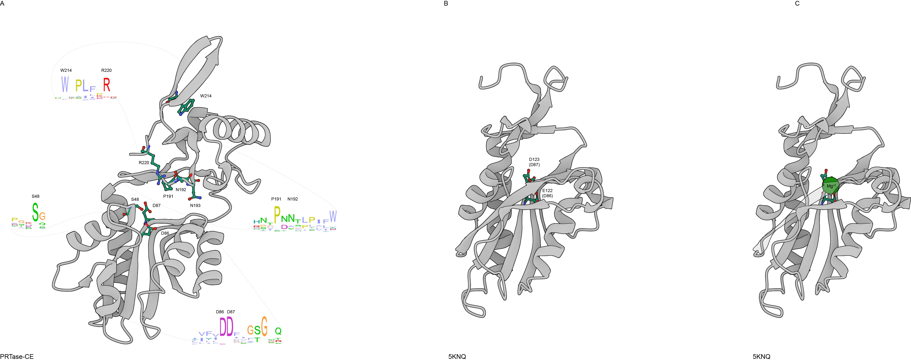

Supplementary Figure S7. Activity site and conserved residues from the PRTase-CE domain. (A) Alphafold modeling of the PRTase-CE domain (NPV02125.1). The residues conserved in the activity sites are shown in ball and stick representations. Sequence logo of the conserved regions are shown and the dotted lines indicate the start and end position of the logo in the structural model. (B and C ). Activity site of the experimental crystallized PRTase domain from the PDB 5KNQ without and with the Mg+2 ion respectively.